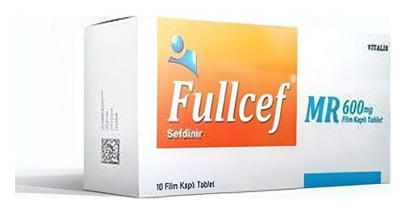

Fullcef MR 600 mg Film Kaplı Tablet, 10 Tablet

Ne için kullanılır
KT · Bölüm 1FULLCEF MR’ın etkin maddesi olan sefdinir, oral geniş spektrumlu, yarı sentetik, üçüncü kuşak sefalosporin grubundan bir antibiyotiktir. FULLCEF MR, 10 film kaplı tablet Alu-Alu folyo ambalaj malzemesiyle ambalajlanmaktadır.
FULLCEF MR aşağıda yer alan hastalıkların tedavisinde kullanılır.
Ergen ve yetişkinlerde: Toplum kökenli akciğer iltihabı (zatürre, pnömoni) Kronik bronş iltihabının akut alevlenmesi Yüz kemiklerinin içindeki hava boşluklarının iltihabı (akut maksiller sinüzit) Bademcik (tonsillit) /yutak (farenjit) iltihabı Komplike olmayan cilt ve yumuşak doku iltihapları